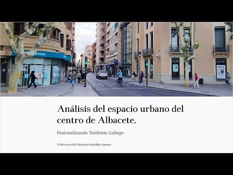

¿QUÉ ES Y CÓMO SE REALIZA UN ABP?
En el Instituto Histórico Bachiller Sabuco de Albacete, los estudiantes de 3º de la ESO desarrollaron un proyecto ABP centrado en la posible peatonalización de la calle Tesifonte Gallego, una vía céntrica de la ciudad. Guiados por el profesor José Eduardo Córcoles, los alumnos investigaron la problemática del tráfico en dicha calle, utilizando herramientas de tecnología geográfica como ArcGIS y Google Maps para analizar datos sobre el tráfico, la contaminación acústica y la infraestructura urbana. Además, realizaron encuestas georreferenciadas para recoger la opinión pública y midieron niveles de ruido. El objetivo del proyecto fue proponer soluciones factibles y sostenibles para la peatonalización de la calle, integrando la comprensión de la geografía urbana en su contexto cercano.El País
Este enfoque de aprendizaje activo y contextualizado ayudó a los estudiantes a desarrollar un pensamiento crítico y creativo, aplicando conocimientos geográficos para mejorar su comunidad.El País
Para más detalles sobre este proyecto, puedes consultar el artículo publicado en El País:

Este ejemplo demuestra cómo el ABP puede aplicarse en entornos educativos reales, involucrando a los estudiantes en la resolución de problemas auténticos y fomentando su compromiso social y desarrollo profesional.
Análisis y opinión personal sobre el ABP:
El proyecto “¿Peatonalizamos la calle Tesifonte Gallego?” es un excelente ejemplo de cómo el Aprendizaje Basado en Problemas (ABP) puede conectar el currículo escolar con la realidad inmediata del alumnado. A través de un problema auténtico y cercano —la mejora del entorno urbano—, los estudiantes no solo aplican conocimientos geográficos, tecnológicos y sociales, sino que también desarrollan competencias clave como la comunicación, el trabajo en equipo, el pensamiento crítico y la ciudadanía activa.
Además, el proyecto fomenta una actitud de responsabilidad social, ya que implica analizar datos reales (contaminación, tráfico, ruido) y recoger opiniones de la ciudadanía para fundamentar sus propuestas. Esto les permite comprender que su aprendizaje tiene un impacto real y que pueden ser agentes de cambio en su comunidad.
La utilización de herramientas tecnológicas como ArcGIS y Google Maps potencia también la competencia digital, integrándola de manera natural en el proceso de investigación y solución del problema.
En definitiva, este ABP es una propuesta muy bien planteada que motiva al alumnado, lo implica emocionalmente, y le proporciona un aprendizaje significativo y duradero, en línea con las metodologías activas más eficaces.
Espero que lo disfrutéis tanto como lo he disfrutado yo.